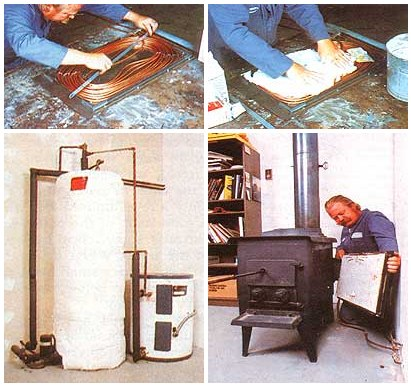
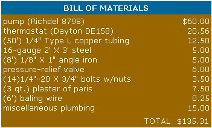
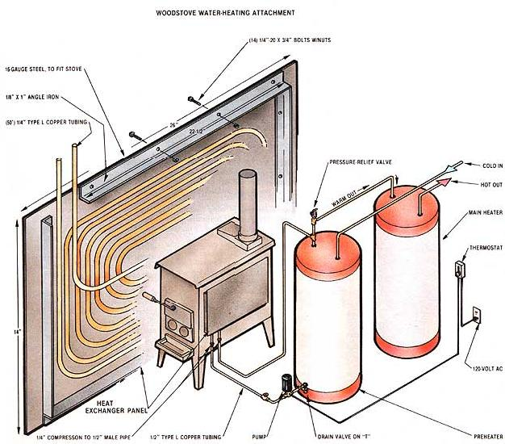

This sensible approach to heating your water could drastically reduce your monthly utility bill!
One of the advantages of heating with wood is the variety of needs that just one stove can meet. Besides keeping us warm, a woodburner can cook dinner, dry clothes, and toast chilly toes. But wouldn't it be just dandy if that black box would draw a nice hot bath, too?
Actually, heating domestic water with a woodstove is nothing new . . . many cookstoves had water-tank attachments more than a century ago. The advent of the "airtight" woodburner and pressurized water systems has left most of those old batch-heating techniques by the wayside, though, and new methods based on closed circulaton have been developed.
YOU CAN HAVE
YOUR HOT WATER . . .
The majority of the modern woodstove water-warming attachments employ heat exchangers that are fitted inside the firebox or the chimney of the appliance. The best commercial examples of this approach work very well indeed. If the stove is run most of the day, they can supply a whole family's hot water. For safety's sake, however, these devices are usually made from stainless steel (an expensive commodity) and must be pressure-tested to insure that they are able to withstand the very high temperatures they may encounter inside the heating system. As a consequence, quality internal heat exchangers carry pretty hefty price tags. Homemade internal devices, on the other hand, have developed a nasty reputation for scalding steam explosions.
. . AND (ALAS:)
YOUR CREOSOTE, TOO
Furthermore, extracting heat from either the firebox or the chimney of a woodstove can have unfortunate side effects: Pulling Btu directly from the fire (with a firebox exchanger) can reduce combustion efficiency . . . and if the products of incomplete combustion are cooled below the temperature at which they condense (by either a firebox or a chimney heat exchanger), heavy creosote accumulation may occur. There is doubtless no need to mention that the combination of a chimney fire and an internal, water-filled heat exchanger can spell disaster.
SAFE AND SANE
Recognizing the fact that there is no uncompensated noon repast, we adopted a conservative approach to designing our own water-heating attachment for a woodstove. Rather than chance placing an exchanger inside the heater or stack, we attached one to the outside of the firebox. By taking this tack, we avoided making any major modifications to the heater, which maintains Underwriters' Laboratory certification. What's more, a couple of safety criteria that we've already mentioned are met: The temperatures encountered outside the heater's skin won't boil water (as long as that liquid's kept circulating), and the heat used to warm the water is that which would have been radiated by the heater anyway, so no extra heat is being removed from the firebox.
Our water-heating attachment consists simply of about 50 feet of 1/4" copper tubing coiled into a plaster of paris-filled panel. The gypsum-based material helps distribute heat evenly to the coils and allows the exchanger to be in direct contact with the stove body without chancing overheating. (We'd like to thank Ed Walkinstik for this suggestion.) The assembly bolts to the side of the heater and is plumbed into a salvaged 42-gallon water heater (we used one with a burned-out element but a sound tank) in much the same fashion as would be a solar preheater.
A 10-gallon-per-minute pump installed on the heater's drain circulates water through the coil and back to a "T" just below the pressure-relief valve at the tank's top (the valve was retained as a safety precaution). Cold water enters the vessel through the normal inlet, and the wood-warmed water moves on to a conventional electric heater through the standard hot outlet. All of the lines are well insulated with 1"-thick high-density foam.
Of course, if the water were circulated constantly, heat could be lost to the stove when no fire was burning. To prevent this from happening, researcher Dennis Burkholder made an automatic on/off control from a line-voltage air-conditioner thermostat wired into the pump's power supply line. (You could also use a more commonly available combination heating/air-conditioning control, set on the cooling mode.) The thermostat is attached to the wall three feet away from the heater and about a foot above its top. When the air temperature reaches 80 °F, the 120-volt control turns the pump on, and water starts warming up. The built-in differential switch shuts the circulator back off again when the temperature drops to 76 °F.
CONSTRUCTION TIPS
The components of the heat exchanger system are shown in the accompanying illustration, but of course each installation will require some alteration of the basic dimensions. For example, if your stove is larger than ours, you might be able to enlarge the panel enough to get a full 60-foot coil of the 1/4" soft-copper tubing inside the up-sized exchanger framework. Those of you who have smaller heaters, however, will have to use a smaller amount of the line.
In any event, it's easiest to work with the tubing as it's been coiled for shipping. We just laid the curled line into the frame and gently bent the tubing to fill the rectangular shape. The flexible material can be arced down to about a 1-1/2" radius without kinking, so it'd not difficult to force it into any potential "hot spots". We worked from the outer edges inward, wiring the coils to the backing plate as we went. (Without the wire to hold the outer circles of tubing in place, the whole thing wanted to spring out of the frame.)
Once you get the copper tubing evenly distributed inside the frame, stir up a thin batch of plaster of paris and pour the mixture into the frame. Level the surface by running a straightedge across the angle iron, and allow the material to dry for a couple of days. Then the panel can be attached to the side of your stove, and the 1/4" lines can be plumbed to the preheater tank's 1/2" tubes.
SAFETY AND PERFORMANCE
We ran extended tests to determine the most effective configuration for the exchanger and to satisfy ourselves that the device would perform safely. For example, to see what would happen if a power failure shut down our pump, we sealed up the tubes exiting the preheater tank and installed a pressure gauge on the relief valve. The highest pressure we were able to develop in the system was 3 PSI . . . and that was after allowing flow to stagnate for eight hours at the highest possible burn rate for our Atlanta Stove Works Catalytic!
Also, to determine if conductive heat exchange through the wall of the stove was being encouraged to an unhealthy extent, we checked the inside of the woodburner's firebox each day for increased creosote accumulation. We found no difference in the appearance or depth of the deposits on any of the four walls, which suggested that the exchanger was receiving mostly radiant energy from the exterior stove wall. (The ceramic may have exerted some insulating effect, counterbalancing increased conductivity.)
How much hot water will the exchanger produce? Well, during a typical seven-hour cycle we would load 55 to 60 pounds of wood into the Atlanta Catalytic, which would boost the 42-gallon tank's contents to just short of 140 °F. This eight-pound-per-hour burn rate is probably somewhat higher than most folks use, so the volume of hot water that you might get from a similar unit could be slightly less. Of course, if you maintain a strong burn all day long, the total over a 24-hour period should still be more than 100 gallons per day of plenty-hot water. And even if you often operate your stove in a "closed down" condition, the system will significantly reduce your water-heating bill.
Depending on the size of your family and the amount of water each person uses, the system could eliminate your wintertime hot-water bill. Consequently, if you're able to get your wood at a price that's substantially lower than that of an equivalent amount of electricity or gas, the energy you put into warming water from your woodstove (which, of course, will be subtracted from the space heat the appliance would have delivered) will be well worth the investment. Besides, you'll have the satisfaction of knowing that you've taken one more step toward replacing nonrenewable sources of energy.
|
 FAR LEFT: First, the coil of copper tubing is positioned inside the angle- iron frame. LEFT: Then plaster of paris is worked in around the tubing. LOWER LEFT: Water warmed in the coils is piped to a storage tank that feeds into the main heater. BELOW: The assembly simply bolts to the side of the woodstove. |
 |
 |